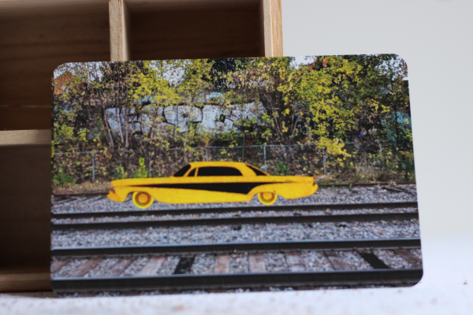
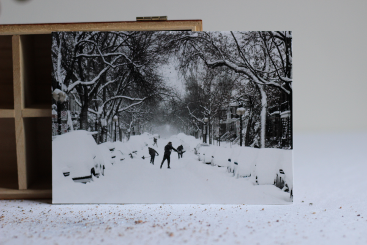

état actuel du marché
La première édition d'Escarcelle aura pour thématique les cartes postales.
- une carte pour le passé : débuter
- une carte pour le futur : un hiver bref
- une carte pour s'inventer des souvenirs : orange julep
débuter

Souvenir associé: Ralentir pour mieux accélérer par la suite. Apprendre une chose ou deux pendant qu'on peut encore des erreurs. Et quand tout commencera à faire du sens ce sera magnifique et quand tout commencera à faire du sens ce sera.
Numéro d'identification : 00a
un hiver bref

Souvenir associé: Un hiver si court que plus personne ne change ses pneus. La dernière entreprise de déneigement a fait faillite. Hier, je tentais de me souvenir du bruit des pas dans la neige fraîchement tombée, après une tempête.
Numéro d'identification: 00b
orange julep

Souvenir associé: Conduire vers l'autre côté de la ville en été, la radio est allumée. Tu prends deux hots-dogs, une frite et un Julep. Je suis la seule qui se préoccupe du Julep. Je suis la seule qui fait attention.
Numéro d'identification: 00c
contact
Pour plus d'information sur le projet, contactez l'artiste au escarcelle@finartcialist.com.
Pour consulter les autres oeuvres du projet finartcialist, consultez le site internet finartcialist.com.